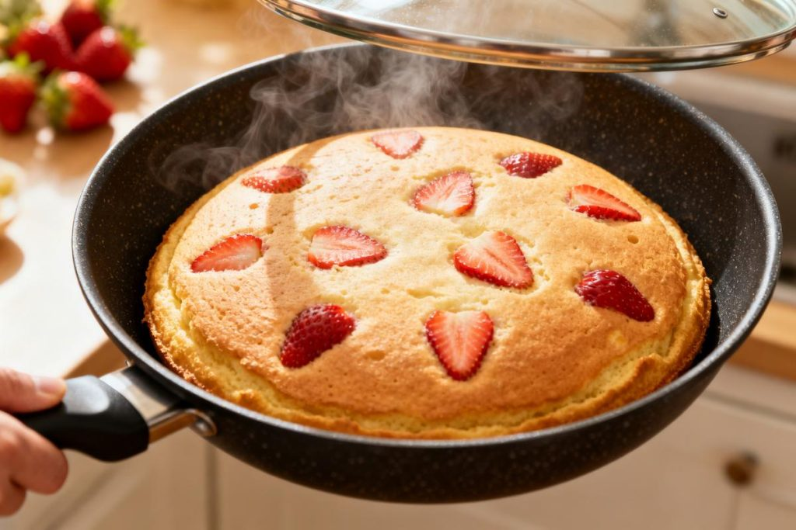

Recette du moment
Pizza Di Muro : Recettes, astuces cuisine et actualités food au quotidien
Gâteau moelleux citron-fraise cuit à la poêle — une recette express, sans four et pleine de saveurs printanières à découvrir dès maintenant.